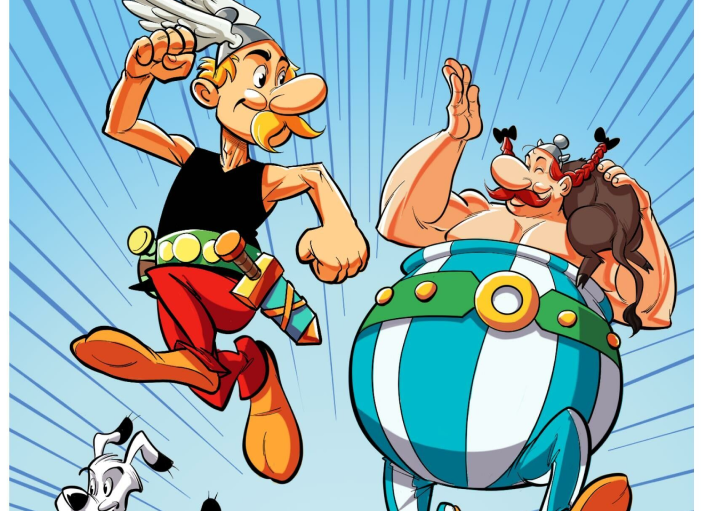

Présentation
"Astérix et Obélix" est une série de bandes dessinées françaises créée en 1959 par René Goscinny et Albert Uderzo.
Elle se déroule en 50 avant Jésus-Christ dans un petit village gaulois résistant à l'occupation romaine grâce à une potion magique qui donne une force surhumaine.
Les deux héros, Astérix, un guerrier astucieux, et Obélix, son ami géant à la force surhumaine, vivent des aventures humoristiques en affrontant les Romains et d'autres ennemis.
La série est célèbre pour son humour, ses jeux de mots et ses références culturelles, et elle a donné lieu à de nombreuses adaptations en films et autres médias.

Aller à la page Scan